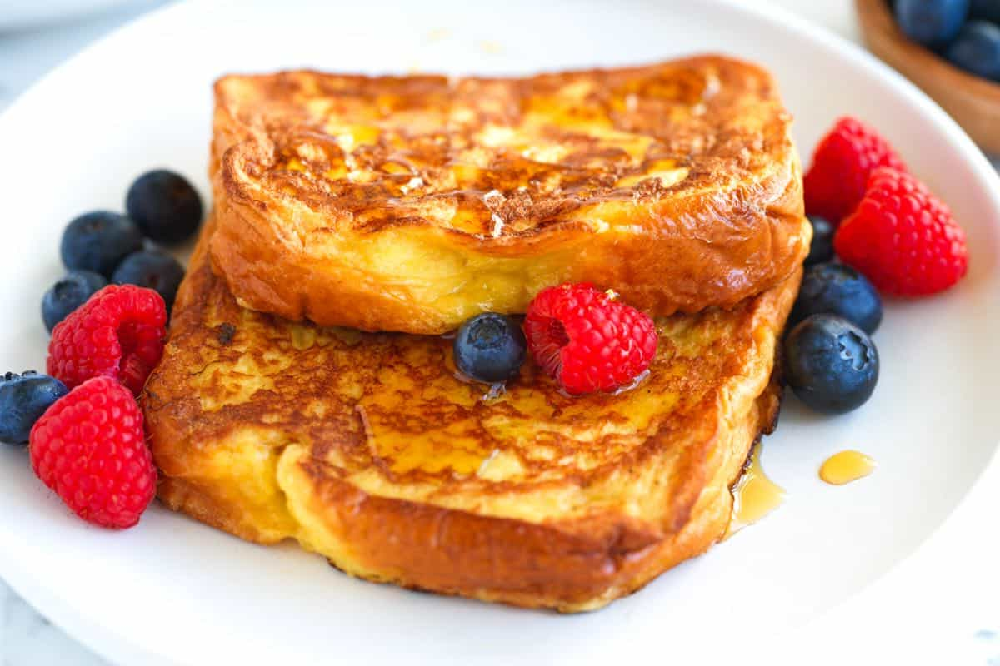

French Toast

The perfect breakfast!
The french toast is a classic breakfast dish created in france.
It is made by dipping bread into a mixture of eggs and milk and then frying it.
It can be served with a variety of toppings such as syrup, fruit, or powdered sugar.
The first recorded recipe for french toast was in a 4th century roman cookbook.
Ingredients
- 4 slices of bread
- 2 eggs
- 1/4 cup of milk
- 1/4 teaspoon of cinnamon
- 1/4 teaspoon of vanilla extract
- 1 tablespoon of butter
Instructions
- Whisk together eggs, milk, cinnamon, and vanilla extract in a shallow dish.
- Heat butter in a large skillet over medium heat.
- Dip each slice of bread into the egg mixture, making sure to coat both sides.
- Place the bread in the skillet and cook until golden brown on both sides.
- Serve hot with your favorite toppings.
Home